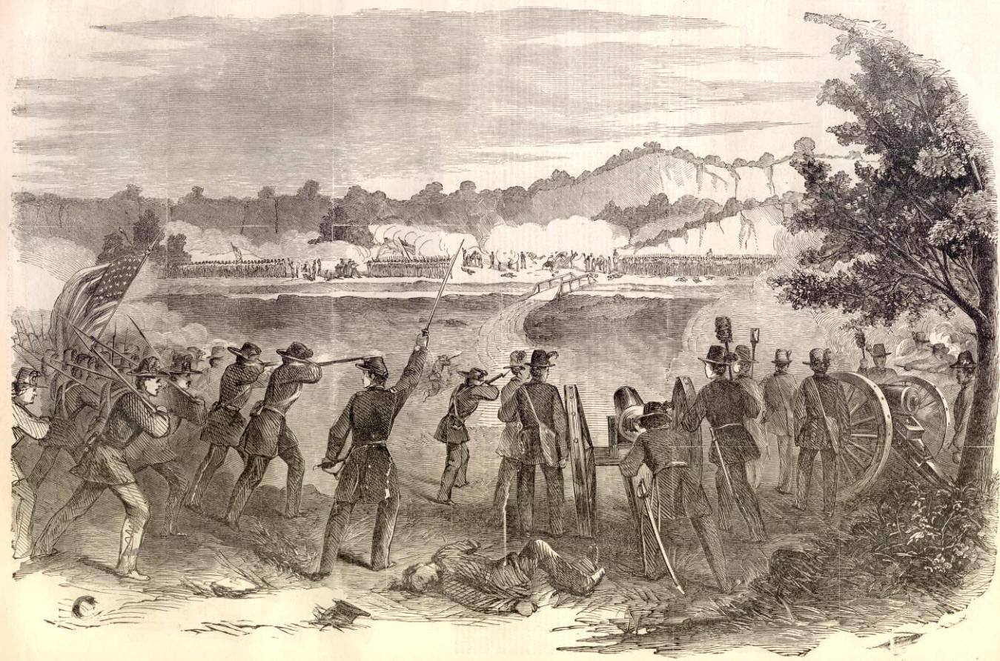

| |
Battle of Carthage
The Battle of Carthage was the important battle of the Third Punic War ,which was between the Punic city of Carthage in Africa and the Roman Republic.The battle took place in 149 BC and was a siege operation which ended in 146 BC with complete destruction of the city of Carthage.The Roman Republic were led by Scipio Aemilianus whereas the Carthagians were led by Hasdrubal The Boeotarch.After the Roman army under Manius Manilius landed in Africa ,Carthage surrendered and handed over hostages and arms,however Roman wanted complete surrender of the city which the Carthagians refused ,the faction supporting submission overtuned by one in favor of defense.The Roman elected the popular Scipio Aemilanius as consul and defeated the Carthagians at Nepheris and beisieged the city.Thus the battle ended up in Roman victory with about 17,000 men killed from the Roman side out of 80,000 men.

Battle of Carthage
For
more information please visit :
More Information about the Battle of Carthage from wikipedia
| |
|
|